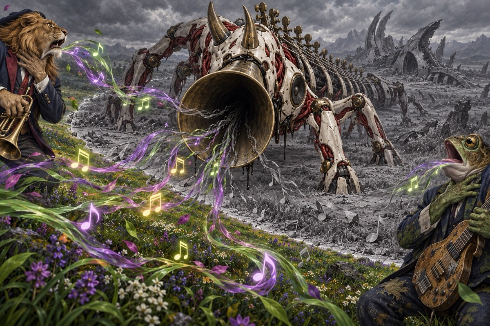
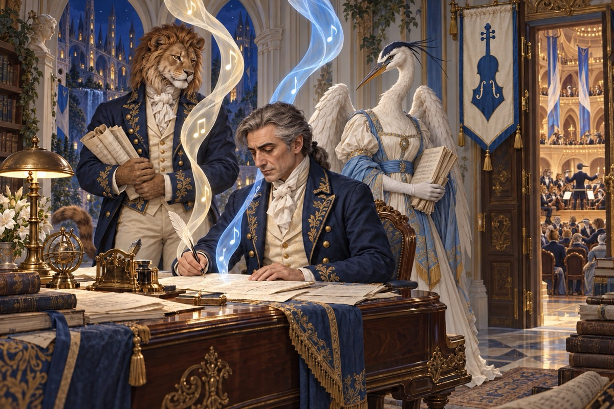
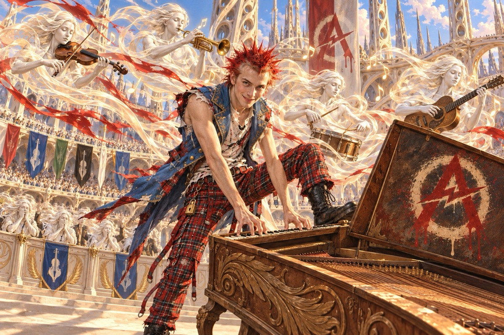
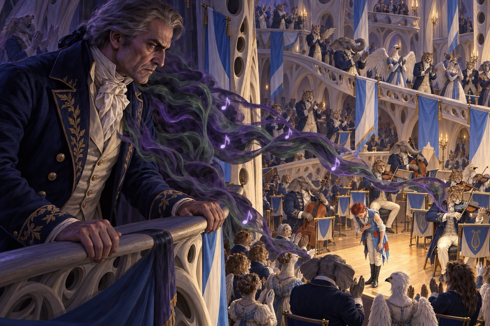
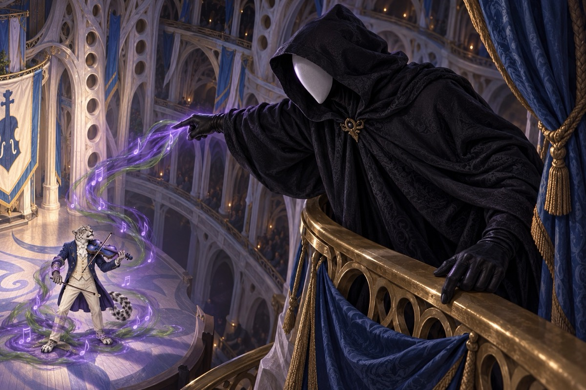
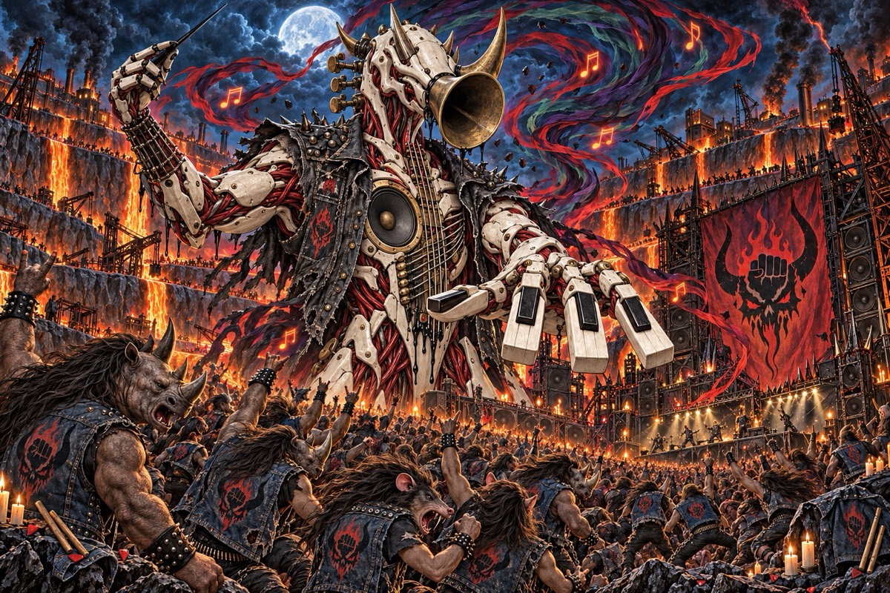
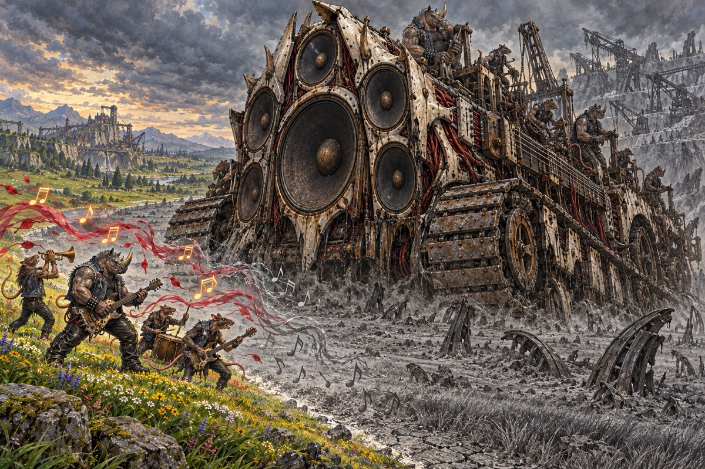
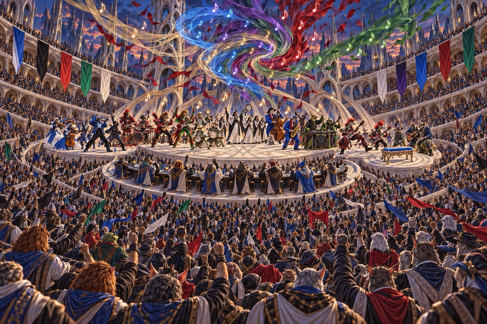
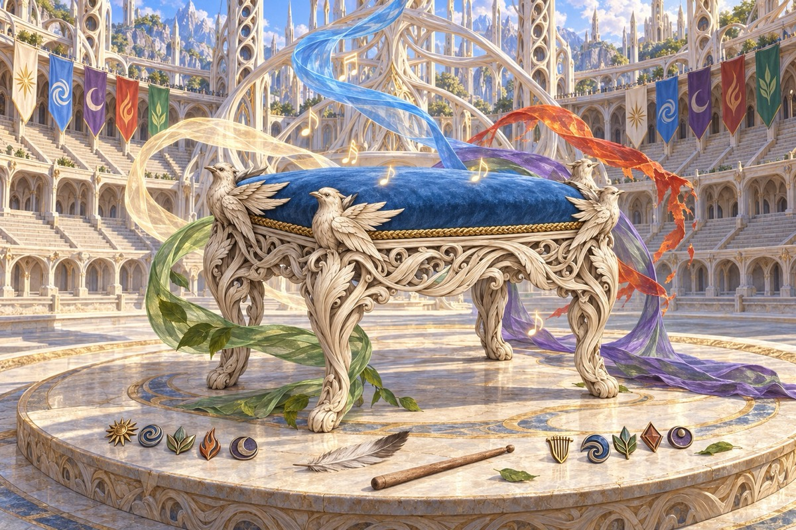

This is the whole story, ending included.

Prologue
The Hush
For generations, Belenon's people believed in the Sacred Winds: the wind is the breath of the world, and music is that breath given shape. Then New Phyrexia invaded, and its engines did what no army had done before. They stilled the wind. Across the plane the air went dead and heavy, and the singing palaces fell silent.
The Royal Knights made their stand at the Windriddle Palaces. Without wind, their war horns wouldn't sound. One soprano saxophone still played, and knights, Aven, Loxodons and Rhoxes sang its anthem together until the old song held the line. When the invasion collapsed, the wind came back. Belenon believes the music brought it home, and since that day the court has decreed that quarrels between the guilds are settled with songs, not swords.

Chapter I
The Call
Once a generation, the court calls the Gale, Belenon's Battle of the Bands. Every guild sends its best to the Windriddle Palaces. The winner's song becomes the Anthem, sung across the plane until the next Gale, and the winning guild takes the Seat of Breath at court and keeps the War Anthem horn, the saxophone that played through the Hush.
This is the first Gale since the invasion, and everyone agrees the stakes have never been higher. Everyone also agrees on the favorite: Salieri, court composer of the Cadenza Conservatory, devout, diligent and correct in every bar. The Conservatory wrote the War Anthem. It fully expects to keep the Seat.

Chapter II
The Prodigy
Amadeus was the Conservatory's brightest student: crude, impulsive, brilliant, and bored. On the night of his last court opera he walked out mid-premiere, and the knights assigned to guard him followed him all the way to the Scrapyards. They snapped their ceremonial blades and became the Broken Swords.
Now Amadeus plays for the Anarkos Riot, on instruments built from Phyrexian wreckage, and the Riot has crashed every Conservatory premiere since. Nobody invited them to the Gale. They're coming anyway, with music made of scrap that is somehow better than anything the court has written in years.

Chapter III
Envy
Salieri can't stop listening. He is skilled enough to hear exactly what Amadeus has and exactly what he himself will never have, and his admiration curdles. He spreads rumors about the Riot. He quietly arranges for rivals to stumble. Entries go missing; stages are double-booked.
And one night, alone in the palace chapel, he asks the Last Breath, the Wind of endings and ambition, for a greater voice of his own.

Chapter IV
The Requiem
A masked patron arrives in the Scrapyards with a purse of gold and a strange commission: a Requiem, a mass for the dead, to be finished before the Gale. Amadeus takes the money. He never learns who paid it, and the patron never takes off the mask.
The work wears him down. The deeper he goes, the darker the music grows, and the Riot starts to worry about the circles under its prodigy's eyes. Behind the mask, Salieri listens to every draft.

Chapter V
The Ring of Grudges
By old custom, each guild names one rival to challenge at the Gale. This year the ten challenges close into a perfect ring, every guild a challenger and every guild challenged. It is no accident. Agents of the Headbanga Mob whispered in every guild's ear, and the Mob's maestro, Vorhaxa, built the bracket so no one could stand aside.
The Mob is a front. Beneath the battle vests and the grief-wakes of the Kilnpits are Phyrexian survivors of the invasion, recruiting grieving fans into a following that moves as one mass. The Metal legends who headline their shows have no idea. The Phyrexians don't need to win the Gale. They only need every guild to try to drown out every other.

Chapter VI
The Silence Returns
In the middle of the Gale, with ten guilds playing at once and each playing louder than the last, the air above the Windriddle Palaces goes dead. A Still Zone, the gray scar the Hush left behind, opens over the courtyard and spreads. Banners hang limp. Notes fall like dead leaves.
Everyone knows who asked the Last Breath for a greater voice; Salieri's sabotage has been gossip for weeks. The court and the guilds turn on him. But Salieri didn't make the silence. The Gale did. Ten guilds crushing the Winds between them made the same dead air Phyrexia's engines made, and the Mob rolled its Still Engine onto the field to finish the job.

Chapter VII
All Together
No guild can fill the silence alone, and so, for the first time, they stop trying. All ten guilds play together, the way the knights once sang the War Anthem: Classical and Punk, Rap and Blues, Metal's own unwitting legends turning their amps toward the Still Engine. The five Winds stir. It isn't enough.
Amadeus walks into the heart of the Still Zone carrying his unfinished Requiem. He plays it there, where sound shouldn't carry, and gives the Winds his last breath. The wind comes back. Amadeus doesn't.

Epilogue
The Seat of Breath
Nobody wins the Gale. It ends with all ten guilds still playing, and the court decrees that the Seat of Breath belongs to all of them. The guilds go home with a lesson the judges had printed in the rules all along: volume doesn't win.
Months later, a finished Requiem in D minor is performed at the Windriddle Palaces, and Belenon weeps. Someone completed it from Amadeus's drafts, in a hand that knew every one of them. Nobody remembers who. Salieri never says.